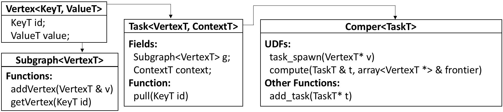

Other Documentations: [How to Deploy], [How to Run], [The Complete API]
Programming Model Overview
G-thinker loads an input graph from Hadoop Distributed File System (HDFS) by partitioning vertices (along with their adjacency lists) among the memory of different machines, forming a distributed key-value store: one may request for a vertex v's adjacency lists by providing v's vertex ID. We say that one pulls v in this case.
G-thinker performs computation on subgraphs. Each subgraph g is associated with a task which performs computation on g and expands g by "pulling" adjacent vertices as needed. Tasks are spawned from individual vertices.
Different tasks are independent, while each task t performs computation in iterations, so that if it is waiting for responses of its pull-requests after an iteration, t will be hanged up to allow a CPU core to process other tasks. Another iteration of t will be scheduled for processing once all its responses are received.
G-thinker runs one process called worker on each machine, which in turn runs multiple computing threads called compers to process tasks. Each comper maintains a queue of tasks waiting to be processed by it, but tasks may be spilled to local disk(s) if the task queue becomes full.
User-Defined Types and Functions
To write a G-thinker program, one needs to be aware of some system-provided classes, which can be divided into two types.
One type of class only requires users to specify data types of their application using C++ template arguments, and one may rename his/her customized class using "typedef" for ease of later use.
The other type of class additionally has virtual functions that need users to implement according to the application logic. For this kind of class, one needs to (1) subclass the base class, (2) specify the data types using C++ template arguments, and (3) implement the virtual functions.
We now introduce these classes, some of which are summarized in the diagram below.

A checklist of the classes is provided below:
Vertex
The Vertex class is for users to specify the type of a vertex’s ID, and the type of its content (e.g., adjacency list). It has three template arguments: (1) <KeyT>, the type of vertex ID; (2) <ValueT>, the type of vertex content that typically includes an adjacency list; (3) <HashT>, the vertex-partitioning function that hashes a vertex ID of type <KeyT> to a worker ID.
Normally, <KeyT> is specified as the type VertexID, which is int by default. If this is the case, a default <HashT> will be used and so users do not need to specify it. Users may use typedef to rename a customized Vertex class like in Lines 22 and 23 of our Triangle Counting application here, where <ValueT> is of type std::vector<VertexID>.
Each vertex object has two fields that can be used by users, (1) id, which is the vertex ID of type <KeyT>, and (2) value, which is typically the adjacency list of user-defined type <ValueT>.
Subgraph
The Subgraph class provides the abstraction of a subgraph, and users need to specify the vertex type in the template argument <VertexT>. See Line 24 of our Triangle Counting application here for an example.
Each subgraph object maintains a vertex array vertexes where each element is of type <VertexT>, and one may iterate through the vertices of a subgraph using this field.
To add a vertex to a subgraph, one may call the function addVertex(v) which appends a copy of v including its ID and value to the end of the vertex array vertexes. Please do not directly update the field vertexes (i.e., read-only), since the subgraph object internally maintains a hash table vmap for looking up a vertex by its vertex ID.
To get a vertex with ID id from a subgraph, one may call the function getVertex(id), which returns a pointer to the corresponding vertex object in the array vertexes, or NULL if such a vertex is not in the subgraph.
If one just needs to check whether a vertex with ID id exists in a subgraph, one may call the function hasVertex(id) which returns a boolean indicator. Since the behavior of our addVertex(v) function is undefined if the same vertex is added more than once, one may call hasVertex(id) to make sure that a vertex is not already added before adding it.
Task
The Task class provides the abstraction of a task that processes a subgraph. It maintains two fields: (1) a subgraph subg of type Subgraph<VertexT>, (2) a context object for keeping any additional information that users want to maintain in a task.
Accordingly, the Task class takes two user-specified data types in its template arguments: (1) <VertexT>, which indicates the vertex data type for the task's subgraph, and (2) <ContextT>, which is optional (does not need to be specified if unused), and which indicates the data type of the task's context object. See Line 25 of our Triangle Counting application here for an example.
Users may call a task object's pull(id) function to request for the vertex whose ID is id (along with its adjacency list) for use in the next iteration of the task's computation. See Line 93 of our Triangle Counting application here for an example.
Comper
The Comper class provides the abstraction of a task-computing thread, and each machine runs multiple compers. This is the most important class that provides virtual functions for users to implement the applicatin logic.
The Comper class takes two user-specified data types in its template arguments: (1) <TaskT>, which takes the user-specified data type for a task, and (2) <AggregatorT>, which takes the user-specified data type for an aggregator to be introduced later.
There are two virtual functions for users to implement in their subclass of Comper, which we call as UDFs (user-defined functions). The first UDF is task_spawn(v), which takes a pointer to a vertex v as input and creates initial tasks from v properly. Recall that each worker/machine loads a portion of vertices at the beginning, and the input to task_spawn(.) is a pointer to a vertex loaded in the local machine.
The second UDF is compute(.) defined as follows:
bool compute(SubgraphT & g, ContextT & context, vector<VertexT *> & frontier);
The function indicates how to compute a task for one iteration, where g and context are the task's subgraph and context fields, respectively. If the task pulled vertices vi1, vi2, ..., vik in the previous iteration, these vertex objects will be cached at the local machine before the current iteration of compute(.), and compute(.)'s 3rd input argument frontier is an array of pointers to the vertex objects vi1, vi2, ..., vik (the order of the pull-requests is preserved). The UDF also returns a boolean value, where true indicates that another iteration of calling compute(.) is needed, and false indicates that the task is finished.
Inside both UDFs task_spawn(.) and compute(.), one may (T1) generate new tasks and add them to the comper's task queue, (T2) pull vertices for use in the next iteration, (T3) get the aggregator to obtain the aggregated data or provide a data to the aggregator, (T4) output something to the output file(s).
(T1) Task's function add_task(t) takes a pointer to a task object as input, and appends the object to the comper's task queue. One may call it in both UDFs task_spawn(.) [example] and, in the case of recursive task splitting, compute(.) [example].
(T2) The UDF task_spawn(v) generates task(s) from a vertex v. In the function, users typically use the C++ "new" operator to create a new task object in the heap [example], set its fields properly including pulling vertices for use in next iteration [example], and then call add_task(t) to add it to the comper's task queue [example].
We remark that we only require users to "new" tasks, and once its pointer is tracked by the system using add_task(.), the system will automatically garbage collect it (see here, here and here) and there is no concern of memory leak. In contrast, if you do not call add_task(.) to add your created task, you need to delete it by yourself [example].
The UDF compute(.) actually works on a task (see here), and Comper's function pull(v) actually calls the current task's function pull(v). Therefore, in compute(.), one may directly call pull(v) to let the current task request for vertex v [example].
(T3) We illustrate the need of aggregator using our Maximum Clique Finding application here, where the aggregator keeps the current maximum clique found up-to-date. In task_spawn(v), if v includes all its neighbors into its subgraph and the subgraph is still not larger than the current maximum clique, no task needs to be spawned. Here, Line 90 copies the current maximum clique from the aggregator agg (obtained at Line 88 using Comper::get_aggregator()) to variable Qmax, and Line 91 performs the above pruning.
Similarly, in the UDF compute(.), Lines 140-142 obtains the current maximum clique, which is used for pruning at Line 172 and Line 192. When a larger clique is found, it is provided to the aggregator at Line 211 using the aggregator's aggregate(.) function.
(T4) Each comper also maintains an output file stream fout (defined here), and you can use "fout >> " to output anything in the UDFs, such as a qualified subgraph found by a task, or the task processing time. More details on "fout" such as the file path can be found in the next part describing the Worker class.
Worker
The Worker class provides the abstraction of the process running on a machine, which manages multiple comper threads (see here). The Worker class takes the user-specified Comper subclass in its template argument <Comper>, and inherits from it the other data types such as that of aggregator (see here).
The Worker class also provides two UDFs for users to implement in their subclass: (1) toVertex(line) as shown below, which indicates how to parse a line of the input data on HDFS into a vertex object.
virtual VertexT* toVertex(char* line);
An example of implementation can be found here. (2) task_spawn(v, task_collector) as shown below, which is used to generate task(s) from vertex v and to append them to task_collector.
virtual void task_spawn(VertexT * v, vector & task_collector);
This function mirrors Comper::task_spawn(v) described before, but is used by a worker to collect a batch of spawned tasks into task_collector for sending to another worker for load balancing (i.e. work stealing).
The difference in UDF implementation is that, in Comper::task_spawn(v), after a task is generated, it is added to the comper's task queue by calling add_task(.); in contrast, in Worker::task_spawn(v, task_collector), a generated task is appended to task_collector. See here and here for a comparison.
There are two important directories TASK_DISK_BUFFER_DIR and REPORT_DIR. Recall that each comper will spill tasks to its local disk if the comper's task queue becomes full, and these tasks are spilled under the directory TASK_DISK_BUFFER_DIR. Also recall that each comper maintains an output file stream fout, and the corresponding output file is REPORT_DIR/{worker_id}_{comper_id}.
The default path of TASK_DISK_BUFFER_DIR (resp. REPORT_DIR) is "buffered_tasks" (resp. "report"), a folder under the same path where your program locates. They are specified in the Worker class's constructor and you may specify them as other paths when creating the worker. The 1st argument of the constructor is mandatory, and indicates how many compers each worker runs.
We recommend the paths to be on a locally mounted disk, rather than a shared NFS (network file system). Otherwise, the disk IO of all compers is sharing the limited bandwidth of the same disk. REPORT_DIR can be set on NFS if the volume of output is small, so that the folder contains all the output files; otherwise, the output can be collected from folder REPORT_DIR of every machine (e.g., using scp) after the job is finished.
To run a job, one needs to create a Worker object, set its Aggregator and Trimmer objects (to be described soon) properly using functions setAggregator(.) and setTrimmer(.) (if applicable), and then call the run(param) function to start the job (where param contains the input data path on HDFS). See the main() function of our Triangle Counting application for an example.
Trimmer
If users want to preprocess the adjacency list of each loaded vertex, they may define a trimmer object, whose type is a subclass of the Trimmer class. Users need to implement the UDF trim(v) to preprocess the vertex object v, and see here for an example that trims those vertices in v's adjacency list whose IDs are smaller than v.
After defining the Trimmer subclass, and before calling Worker::run(param) to start the job, one needs to associate a trimmer object with the worker to run. See Lines 266 and 269 of our Maximum Clique Finding application for an example.
Aggregator
Users may also aggregate results computed by tasks, and get the current aggregated result during task processing. This is achieved by subclassing the Aggregator class to specify the aggregating logic.
The Aggregator class has three template arguments: <ValueT>, <PartialT> and <FinalT>, which we explain next. Each worker/machine maintains a local aggregator object. Users may aggregate a data of type <ValueT> to the local aggregator, which updates the local aggregator's status of type <PartialT>. Every AGG_SYNC_TIME_GAP microseconds (1 second by default), the statuses of local aggregators are synchronized to obtain a global status of type <FinalT>.
The Aggregator class provides 6 UDFs, which are shown below along with their semantics:
//how to initiate the fields of an aggregator object
//usually called at the very beginning of a job
virtual void init();
//usually called in Comper::compute(.)
//to aggregate value "context" to the aggregator
virtual void aggregate_udf(ValueT & context);
//called when local aggregators synchronize their statuses
//worker 0 gathers statuses of workers 1, 2, ..., and
//calls stepFinal_udf(.) once using each received status as input
virtual void stepFinal_udf(PartialT & part);
//returns the status of the current local aggregator
//called by workers 1, 2, ...
virtual void finishPartial_udf(PartialT & collector);
//returns the global status obtained by synchronization
//called by worker 0
virtual void finishFinal_udf(FinalT & collector);
//the input is the global status obtained by synchronization
//init_udf(.) is called after each synchronization
//to update the local aggregator's status if necessary
virtual void init_udf(FinalT & prev);
For example, this aggregator maintains the current maximum clique. It maintains a field Q_max to record the current maximum clique. Note that its UDF init_udf(.) will update Q_max with the global maximum clique obtained by synchronization, so that a new maximum clique found on one machine can be broadcast to all machines for effective search space pruning.
As another example, this aggregator counts the number of triangles found. Each local aggregator maintains a field count to record the total number of triangles found at the local machine. Meanwhile, it also maintains a field sum to keep the summation of all local aggregators' triangle counts, which is the totally number of triangles counted by all machines so far. UDF finishFinal_udf(.) is called by worker 0 to return the summed triangle count, and it also prints it to the console. UDF init_udf(.) resets field "sum" to 0 for next round of summation synchronization.
After the UDFs are implemented, they are not directly called in application logic (and system code), but rather their wrapper functions such as aggregate(.) and finishPartial(.) are called (see here and here for their use cases). These wrapper functions add locks properly to the aggregator status, so that multiple compers can access and update the aggregator status without any conflict. Meanwhile, users do not need to consider the concurrency issues when implementing Aggregator's UDFs, making it simple even for users who have no knowledge in parallel programming.